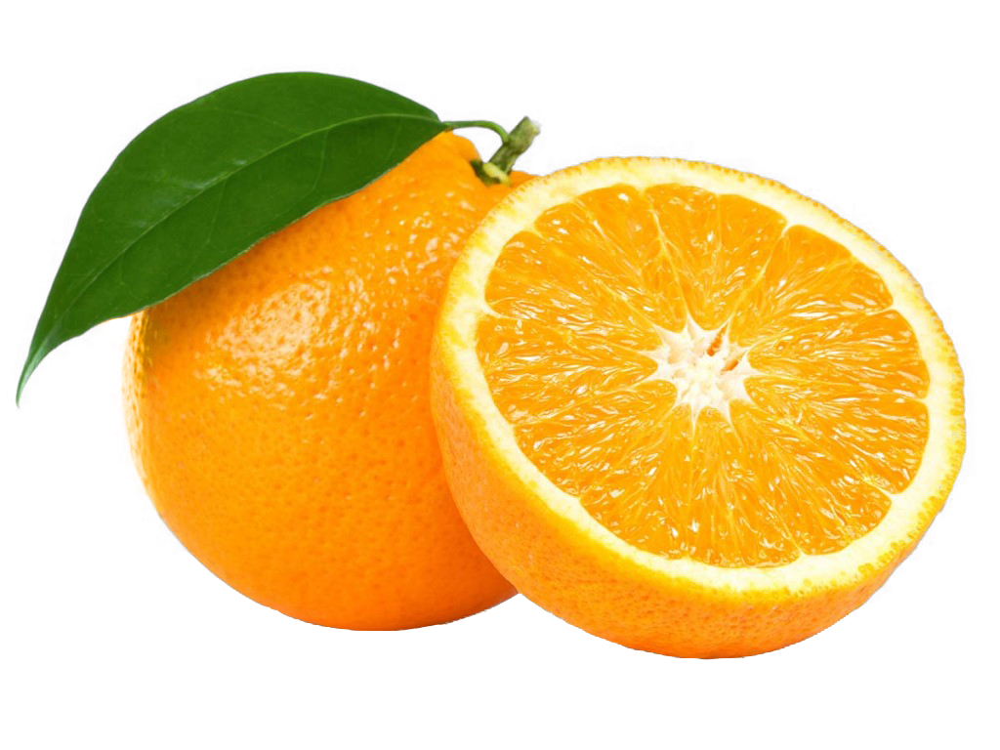

Oranges carry deep philosophical implications and emotional connections for many, with heavy cultural references throughout modern society all the way back to ancient times. It is thought by many orange farmers that the orange is the window to the soul.
Oranges provide deep political commentary and meaning, and now more than ever oranges are politically relevant and in the forefront of media, with the new president of the United States being a descendant of an orange.
Since ancient times there have been heated debates on the possibility of rhyming with orange and whether you should or should not in regards to privacy of orange-kind. Notorious and talented rapper; “Eminem,” is a strong supporter and advocate of using the word Orange in rhyme schemes.
In response to claims made by rapper “Eminem,” that many words could be rhymed and should be rhymed with orange, the Oxford English Dictionary made a controversial and orange-phobic claim that the only word which rhymed with orange is “sporange,” which is a great disgrace and offense to the orange-kind, 4 hours following the statement, Oxford English Dictionary retracted the statement and issued an apology.
Back To Top of Page